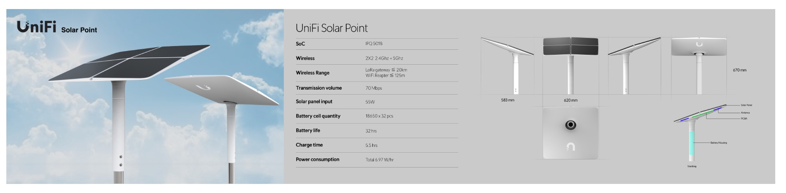
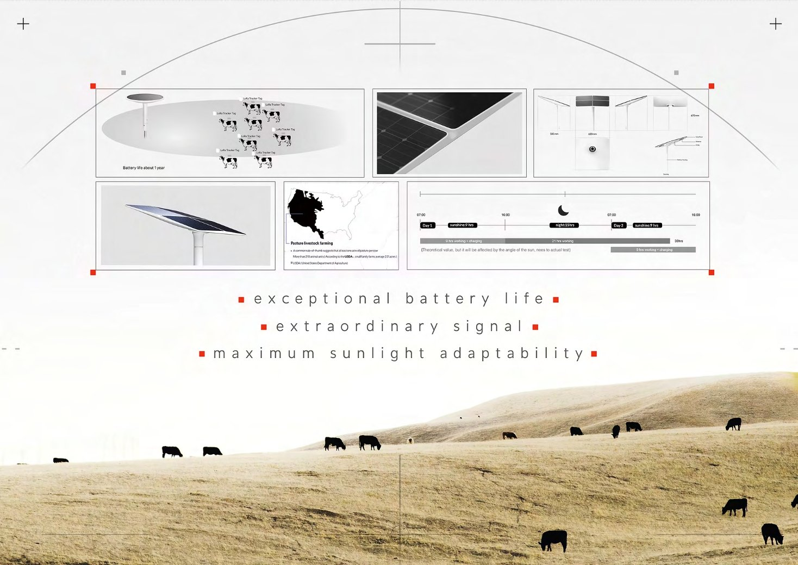
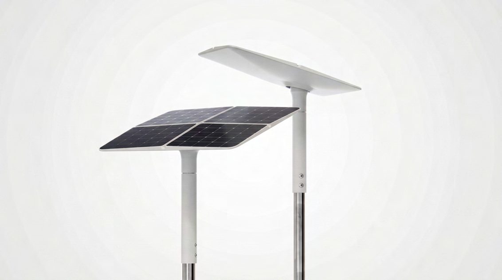
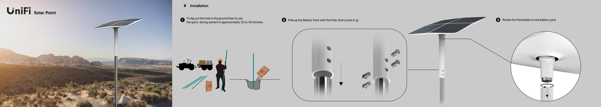
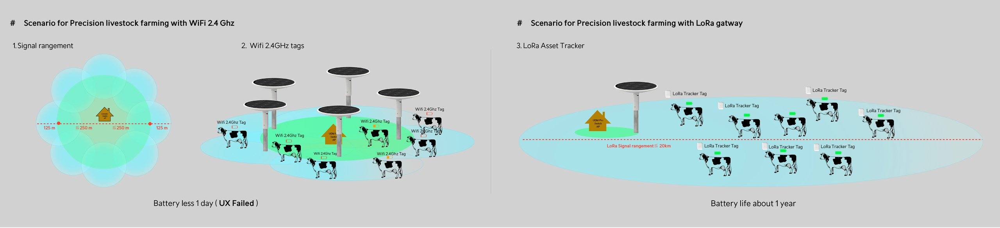
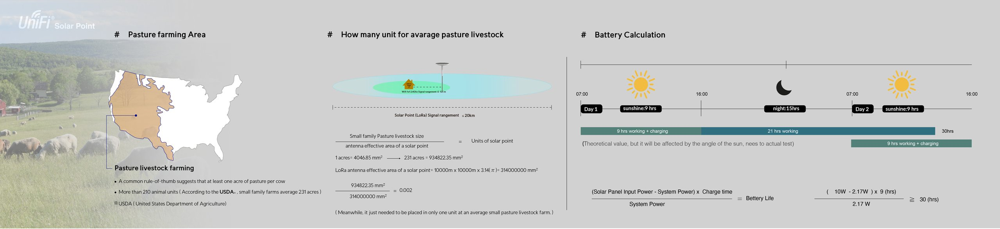
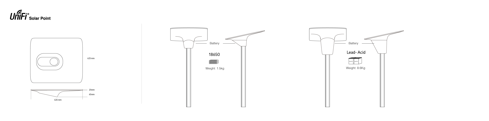
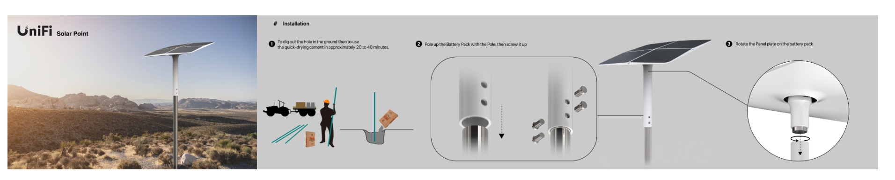

場域
美國西部牧場


Solar Mesh 為 UniFi Solar Point 系列的離網無線節點，專為美國西部廣闊、偏遠、無電網覆蓋的地形量身打造。整體造型以「單人可完成安裝」為核心設計語言，搭配太陽能自動追蹤機構與 9 小時續航力，實現真正離網環境下的最佳化能量收集。


設計出發點:探討「精準畜牧」場景下,WiFi 與 LoRa 兩種無線技術的實際可行性。透過情境模擬釐清目標客群真正的痛點在哪裡。

以美國西部畜牧產業為主要對標市場，透過數據推算單一牧場實際需要的裝置數量，驗證產品定位的合理性。

離網系統的核心是能源自主。針對美國西部年均日照條件，計算太陽能充電與系統耗電之間的平衡，推導出理論續航時間。

從結構設計到電池選型，每個決定都圍繞「單人可安裝」的核心需求展開。

將「單人可完成安裝」的承諾具體拆解為三個步驟，搭配快乾水泥，整個部署可在戶外現場一次完成。